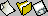
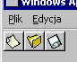
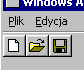
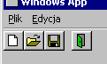

| << Tworzenie menu Spis Strona g³ówna Toolbary, cz.2 >> |
Aplikacje windowsowe, nawet te wyposa¿one w menu, s¹ wredne i nieprzyjazne u¿ytkownikowi, jeœli nie maj¹ paska narzêdzi, zwanego te¿ z angielska toolbarem. Za chwilê dowiemy siê o tym fajnym urz¹dzeniu wszystkiego, albo raczej prawie wszystkiego ;-).
Na pocz¹tek zaznaczam, ¿e toolbar jest kontrolk¹ nale¿¹c¹ do grona tzw. Common Controls. Jest to grupa kontrolek, z której korzysta ka¿dy bardziej rozbudowany program windowsowy, a czêsto nawet ca³kiem malutkie programiki. Mimo tej powszechnoœci korzystanie z nich wymaga nieco zachodu - przede wszystkim musimy dolinkowaæ do programu odpowiedni¹ bibliotekê. W Devie jest to plik libcomctl32.a, w innych œrodowiskach (np. VC++, LCC) nazywa siê on comctl32.lib. Nastêpnie - do³¹czamy nag³ówek commctrl.h. Wreszcie - umieszczamy PRZED jakimikolwiek instrukcjami odwo³uj¹cymi siê do kontrolek typu Common Controls wywo³anie funkcji InitCommonControls - najlepiej uczyniæ to gdzieœ w okolicach miejsca, gdzie tworzymy g³ówne okno:
|
InitCommonControls(); |
Po tych zabiegach mo¿emy wreszcie utworzyæ toolbar. Metody s¹ dwie: albo robimy to znan¹ ju¿ doskonale funkcj¹ CreateWindowEx (wtedy korzystamy ze sta³ej TOOLBARCLASSNAME, okreœlaj¹c¹ nazwê klasy toolbaru), albo te¿ (to wersja wygodniejsza) - specjaln¹ funkcj¹ CreateToolbarEx.
Metoda numer dwa jest o tyle lepsza, ¿e daje nam mo¿liwoœæ zrobienia od razu kompletnego toolbaru (z przyciskami), wiêc nie bêdziemy musieli ich póŸniej dodawaæ po kolei. Argumentów ma ta CreateToolbarEx sporo, a najwa¿niejszy z nich to tablica struktur typu TBBUTTON - jak siê pewnie domyœlasz, ka¿da z takich struktur opisuje kolejny przycisk. I jak siê pewnie domyœlasz, za moment sobie tê strukturê dok³adnie omówimy ;-).
| struct TBBUTTON | |
| Pole | Znaczenie |
|---|---|
| int iBitmap | Indeks bitmapy |
| int idCommand | Indeks komendy |
| BYTE fsState | Stan (lub kombinacja stanów) przycisku |
| BYTE fsStyle | Styl (lub kombinacja stylów) przycisku |
| DWORD dwData | Do wszelakich zastosowañ ;-) |
| int iString | Indeks etykiety przycisku lub wskaŸnik do stringa |
Jak widzisz, przyciskom nie przypisujemy pojedynczych uchwytów do bitmap, tylko indeksy - to dlatego, ¿e toolbar posiada w³asn¹, wewnetrzn¹ listê bitmap. Indeks, który przypisujemy przyciskowi z toolbaru, to w³aœnie numer bitmapy na wewnêtrznej liœcie. Podobnie sprawa wygl¹da z etykietami przycisków - najpierw tworzymy listê stringów, potem przypisujemy ich indeksy przyciskom (chocia¿ niekoniecznie - o tym póŸniej).
Przyciski toolbaru nie maj¹ sztywno przypisanych identyfikatorów - mo¿emy je ustaliæ sami, wype³niaj¹c pole idCommand. Wciœniêcie przycisku na toolbarze powoduje wys³anie "zwyk³ego" komunikatu WM_COMMAND. Jak wiemy, parametr lParam tego komunikatu zawiera zawsze uchwyt kontrolki, która wysy³a ten komunikat (tym razem bêdzie to uchwyt toolbaru), natomiast parametr wParam zawiera kod notyfikacji (górne s³owo) oraz identyfikator kontrolki lub elementu, którego dotyczy komunikat (dolne s³owo). To ostatnie to bêdzie w tym przypadku w³aœnie wartoœæ, któr¹ podamy jako idCommand.
Style przycisku mog¹ zaœ byæ nastêpuj¹ce:
Zazwyczaj u¿ywamy tego pierwszego. Dzia³anie stylu TBSTYLE_CHECK chyba nietrudno odgadn¹æ. TBSTYLE_GROUP, jak równie¿ sama nazwa wskazuje, s³u¿y do grupowania przycisków (bêdzie wciœniêty, dopóki u¿ytkownik nie wciœnie innego przycisku z grupy). Podobnie dzia³a TBSTYLE_CHECKGROUP, tylko ¿e dla przycisków typu TBSTYLE_CHECK. Ostatni styl tworzy nam nie tyle normalny przycisk, co separator - czyli po prostu odstêp miêdzy poszczególnymi grupami przycisków.
Stylów jest trochê wiêcej, niektóre z nich s¹ dostêpne tylko dla okreœlonych wersji biblioteki, inne w nowszych wersjach s¹ dostêpne, ale pod inn¹ nazw¹, jeszcze inne stosuje siê nie do pojedynczych przycisków, lecz do ca³ego toolbaru - krótko mówi¹c, burdel na kó³kach z tym jest. Tak wiêc omówimy je sobie przy konkretnych przypadkach.
Stany przycisku mog¹ byæ takie:
| stany przycisków | |
| Sta³a | Znaczenie |
|---|---|
| TBSTATE_CHECKED | Przycisk ma styl TBSTYLE_CHECKED i jest wciœniêty |
| TBSTATE_PRESSED | Przycisk jest wciœniêty |
| TBSTATE_ENABLED | Przycisk jest w³¹czony (mo¿e reagowaæ na dzia³ania u¿ytkownika) |
| TBSTATE_HIDDEN | Przycisk jest niewidoczny i wy³¹czony |
| TBSTATE_INDETERMINATE | Przycisk jest wy³¹czony (nie reaguje na klikanie) |
| TBSTATE_WRAP | Po przycisku nastêpuje z³amanie linii (czyli nastêpny przycisk znajduje siê w nowej linii). Ten stan musi byæ po³¹czony z TBSTATE_ENABLED. |
Tyle teorii, bierzemy siê do roboty. Nasze zadanie to zrobienie toolbaru do programiku, który tworzyliœmy sobie w odcinku poœwiêconym menu. Bêdzie on mia³ na razie trzy przyciski: Nowy, Otwórz i Zapisz. W tym momencie nie wymigam siê ju¿ od przedstawienia pe³nej sk³adni funkcji CreateToolbarEx, oto i ona:
| HWND CreateToolbarEx(HWND hwnd, DWORD ws, UINT wID, int nBitmaps, HINSTANCE hBMInst, UINT wBMID, LPCTBBUTTON lpButtons, int iNumButtons, int dxButton, int dyButton, int dxBitmap, int dyBitmap, UINT uStructSize ); | |
| Argument | Znaczenie |
|---|---|
| hwnd | Uchwyt do okna rodzicielskiego tworzonego toolbaru |
| ws | Style okna toolbaru. Musi zawieraæ styl WS_CHILD. |
| wID | Identyfikator tworzonego toolbaru |
| nBitmaps | Liczba fragmentów, na jakie ma byæ podzielona bitmapa, okreœlona przez nastêpne dwa parametry. |
| hBMInst | Uchwyt programu, w którego zasobach znajduje siê bitmapa. |
| wBMID | Identyfikator zasobu z bitmap¹ dla toolbaru. Jeœli hBMInst równy jest NULL, to parametr ten powinien zawieraæ nie identyfikator, lecz uchwyt (HBITMAP) do bitmapy. |
| lpButtons | WskaŸnik do tablicy struktur TBBUTTON, zawieraj¹cych informacjê o poszczególnych przyciskach. |
| iNumButtons | Liczba przycisków na toolbarze. |
| dxButton, dyButton | Wymiary przycisku w pikselach. |
| dxBitmap, dyBitmap | Wymiary bitmap przycisków (ty¿ w pikselach). |
| uStructSize | Rozmiar (w bajtach) struktury TBBUTTON. |
Funkcja zwraca uchwyt do nowego toolbaru (uchwyt typu HWND, oczywiœcie), jeœli tworzenie siê powiedzie. Jeœli funkcja potknie siê po drodze, to zwróci NULL.
Zaczynamy od stworzenia bitmapy z odpowiednimi ikonami. Domyœlne wymiary pojedynczej ikony to 16x15 pikseli, ale nic nie stoi na przeszkodzie, by je sobie zmieniæ. Nasze bêd¹ mia³y 16x16 pikseli. Ca³a bitmapa bêdzie wygla³a tak:

Musimy j¹ wczytaæ z dysku:
| HBITMAP hbmTool = (HBITMAP)LoadImage(hThisInstance, "tool.bmp", IMAGE_BITMAP, 0, 0, LR_LOADFROMFILE|LR_LOADMAP3DCOLORS); |
Teraz tworzymy sobie tablicê trzech elementów typu TBBUTTON i wype³nieniamy j¹:
|
TBBUTTON tbb[3]; ZeroMemory(tbb, sizeof(tbb)); for(int i=0; i<3; ++i) { tbb[i].idCommand = i; tbb[i].iBitmap = tbb[i].iString = i; tbb[i].fsState = TBSTATE_ENABLED; tbb[i].fsStyle = TBSTYLE_BUTTON; } |
Jak widaæ, stworzyliœmy trzy przyciski. Ich identyfikatory to kolejne liczby: 0, 1, 2. Takie same s¹ indeksy bitmap. Program wczyta bitmapê i "podzieli" j¹ na trzy fragmenty (wed³ug wymiarów, które za chwilê podamy w funkcji CreateToolbarEx), które bêd¹ identyfikowane w³aœnie kolejnymi liczbami ca³kowitymi. Najwy¿sza pora stworzyæ nasz toolbar:
| HWND hToolbar = CreateToolbarEx(hwnd, WS_CHILD|WS_VISIBLE, 500, 3, NULL, (UINT)hbmTool, tbb, 3, 16,16,16,16, sizeof(TBBUTTON)); |
Mamy ju¿ toolbar, nadaliœmy mu identyfikator 500 oraz trzy przyciski na podstawie tablicy tbb. Przyciski maj¹ wymiary 16x16, tak jak sobie zapowiadaliœmy. Oto nasze cudo:

Biblioteka comctl32 udostêpnia nam szereg standardowych ikonek do toolbaru. S¹ wœród nich miêdzy innymi nasze trzy: Nowy, Otwórz i Zapisz. Po co wiêc mamy siê mêczyæ tworzeniem w³asnych bitmap, skoro mo¿na skorzystaæ z gotowych? Robi siê to bardzo prosto. Po pierwsze - zamiast NULL, podajemy funkcji CreateToolbarEx uchwyt do biblioteki comctl32. Jest on zawarty w sta³ej HINST_COMMCTRL. Nastêpnie jako identyfikator bitmapy podajemy sta³¹ IDB_STD_SMALL_COLOR (nietrudno zgadn¹æ, ¿e IDB_STD_LARGE_COLOR oznacza du¿e wersje ikon). Wreszcie usuwamy z pêtli linijki, w których przypisujemy numer bitmapy i wszystkie trzy ustawiamy "rêcznie":
|
tbb[0].iBitmap = STD_FILENEW; tbb[1].iBitmap = STD_FILEOPEN; tbb[2].iBitmap = STD_FILESAVE; |
Pe³n¹ listê dostêpnych sta³ych znajdziesz w pliku commctrl.h. A tymczasem wprowadzamy wszystkie omówione zmiany do wywo³ania CreateToolbarEx:
| HWND hToolbar = CreateToolbarEx(hwnd, WS_CHILD|WS_VISIBLE, 500, 3, HINST_COMMCTRL, IDB_STD_SMALL_COLOR, tbb, 3,16,16,16,16, sizeof(TBBUTTON)); |
Uda³o siê, zamiast ikonek w stylu Dev-a mamy zwyk³e, nudne ikonki windowsowe ;-).

Bardzo czêsto siê zdarza, ¿e wiêkszoœæ przycisków na toolbarze to przyciski ze standardowymi ikonkami, ale potrzebujemy te¿ jednego lub kilka przycisków z w³asnymi obrazkami. Nie pozostaje nam nic innego, jak tylko dodawaæ w³asne przyciski i bitmapy do nich ju¿ po utworzeniu "g³ównej" czêœci toolbaru. Za³ó¿my przyk³adowo, ¿e chcemy sobie dorzuciæ na koñcu przycisk Koniec ;-). Dorzucimy te¿ separator - choæby po to, ¿ebyœ póŸniej nie pyta³, jak to zrobiæ ;-).
Zacznijmy od wczytania bitmapy do przycisku Koniec - tego ju¿ nie bêdê pokazywa³ któryœ tam raz z rzêdu, popatrz sobie wy¿ej. Za³ó¿my, ¿e mamy ju¿ bitmapê i uchwyt do niej - hbmKoniec. Musimy teraz stworzyæ oraz wype³niæ strukturê TBADDBITMAP, co te¿ czynimy:
|
TBADDBITMAP tbab; tbab.hInst = NULL; tbab.nID = (UINT)hbmKoniec; |
Z powy¿szego mo¿emy wywnioskowaæ, ¿e istnieje równie¿ mo¿liwoœæ dodawania bitmap z pliku zasobów programu, jeœli jako hInst podamy uchwyt od tego programu, a jako nID - identyfikator bitmapy w pliku zasobów. Mo¿emy te¿, analogicznie do powy¿szego przyk³adu, dodawaæ przy wykorzystaniu struktury TBADDBITMAP pojedyncze ikony z comctl32.
Teraz musimy jedynie wys³aæ komunikat TB_ADDBITMAP, przekazuj¹c w nim liczbê bitmap, które dodajemy (u nas tylko jedna), oraz adres struktury TBADDBITMAP:
|
int nIndeks = SendMessage(hToolbar, TB_ADDBITMAP, 1, (LPARAM)&tbab); |
Nastêpnie tworzymy drug¹ tablicê z przyciskami. Tym razem dodajemy dwa przyciski - jeden separator i jeden zwyk³y przycisk:
|
TBBUTTON tbb2[2]; ZeroMemory(tbb2, sizeof(tbb2)); tbb2[0].idCommand = 3; tbb2[0].iString = 3; tbb2[0].iBitmap = 0; tbb2[0].fsState = TBSTATE_ENABLED; tbb2[0].fsStyle = TBSTYLE_SEP; tbb2[1].idCommand = 4; tbb2[1].iString = 4; tbb2[1].iBitmap = nIndeks; tbb2[1].fsState = TBSTATE_ENABLED; tbb2[1].fsStyle = TBSTYLE_BUTTON; |
Dodajemy przyciski, wykorzystuj¹c odpowiedni komunikat:
|
SendMessage(hToolbar, TB_ADDBUTTONS, 2, (LPARAM)&tbb2); |
Otrzymujemy w rezultacie coœ w tym stylu:

Taki toolbar mo¿e i fajnie wygl¹da, ale zda siê psu na budê, jeœli nie bêdzie do tego dzia³a³ jak nale¿y, tzn. wywo³ywa³ odpowiednich komend po wciœniêciu odpowiednich przycisków. Zaimplementowanie tego jest na szczêœcie ca³kiem proste. Jak ju¿ wspomnia³em, wciœniêcie przycisku wysy³a komunikat WM_COMMAND. Musimy najpierw sprawdziæ, czy komunikat ten faktycznie pochodzi od toolbaru i w tym celu mo¿emy pos³u¿yæ siê parametrem lParam komunikatu. Z kolei parametr wParam, a konkretniej jego dolna po³ówka, zawiera identyfikator wciœniêtego przycisku (o ile mu go nadaliœmy).
W naszym przyk³adzie mamy teraz 5 przycisków (w tym jeden separator) o identyfikatorach od 0 do 4. Warto by zdefiniowaæ jakieœ sta³e dla tych identyfikatorów, coby w kodzie by³o od razu widaæ, ¿e chodzi o przyciski:
|
#define TOOL_NOWY 0 #define TOOL_OTWORZ 1 #define TOOL_ZAPISZ 2 #define TOOL_KONIEC 4 |
Identyfikatora dla separatora oczywiœcie nie potrzebujemy, gdy¿ nie generuje on ¿adnych komunikatów :-). Teraz pora napisaæ sobie obs³ugê komunikatu WM_COMMAND. Zrobimy to tylko dla przycisku Koniec, bo to bêdzie najprostsze ;-).
|
case WM_COMMAND: { //sprawdzamy, czy komunikat pochodzi od toolbaru if((HWND)lParam == hToolbar) { //selekcja identyfikatorów switch(LOWORD(wParam)) { case TOOL_NOWY: //brak zdarzenia ;-) break; case TOOL_OTWORZ: //brak zdarzenia ;-) break; case TOOL_ZAPISZ: //brak zdarzenia ;-) break; case TOOL_KONIEC: { //Zakoñcz program DestroyWindow(hwnd); } break; } } } break; |
Dziêki tym zabiegom klikniêcie ikonki drzwi bêdzie nas faktycznie wywala³o za drzwi ;-). Jeœli do wypróbowania przyk³adów z tego odcinka wykorzystujesz ten sam kod, w którym æwiczy³eœ tworzenie menu (co jest zalecane), to prawdopodobnie ju¿ masz w nim obs³ugê innych komunikatów WM_COMMAND (np. pochodz¹cych od menu), wiêc musisz to uwzglêdniæ przy wklejaniu fragmentu dotycz¹cego toolbaru, inaczej narobisz sobie niez³ej kaszanki ;-).
| << Tworzenie menu Spis Strona g³ówna Toolbary, cz.2 >> |